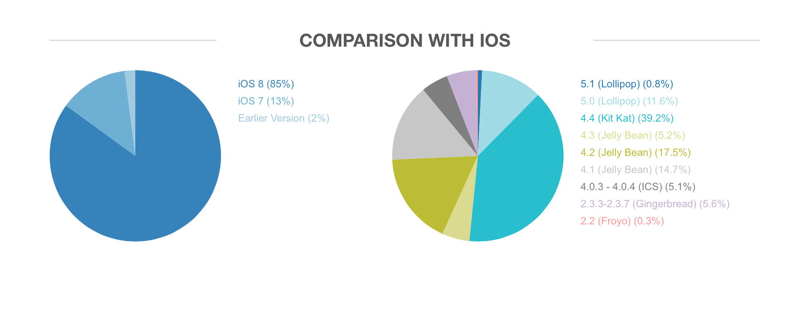
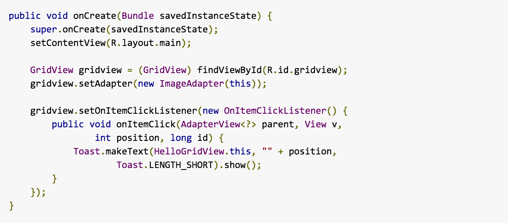
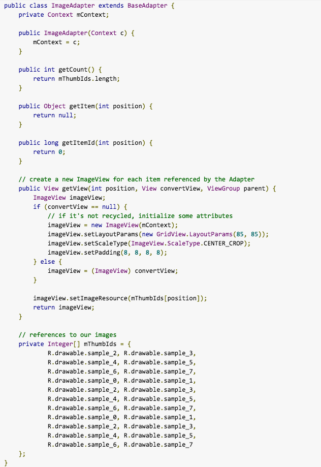
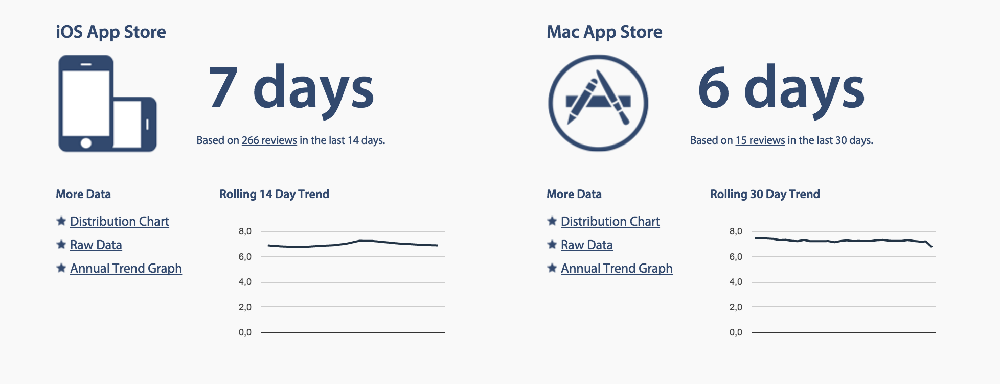
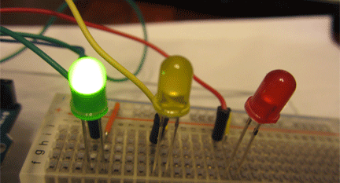
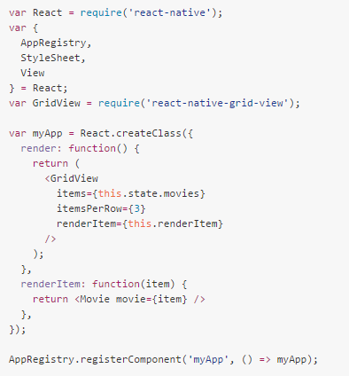

EL JAVASCRIPTO
Y los emuladores de la muerte
Autobombo

- SDE @ Groupon
- JS Chile & Chile Dev <3
- IC Champion
Fernando Larrañaga - @xabadu
Autobombo
- SDE @ Groupon
- Noders & JS Chile
- Level 3 Salsa Ninja
Felipe Torres - @fforres
El Javascripto y el Principe Nativo
a.k.a.
Como estuve a punto de dejarlo todo e irme a vender cuchuflís a la playa
Todo parte con una historia en una pequeña startup
¿Android? Claro, tenemos años de experiencia al respecto.

Existencia de la tecnología + 5 años = Experiencia de la Startup
¿Cómo empezamos?
La (no tan) ayuda
- SDK
- Dependencias
- Ejemplos (?)
- Documentación
- Membresías
El primer hola mundo
import android.app.Activity;
import android.os.Bundle;
import android.widget.TextView;
public class HelloWorldActivity extends Activity {
@Override
public void onCreate(Bundle savedInstanceState) {
super.onCreate(savedInstanceState);
TextView text = new TextView(this);
text.setText("Hola mundo");
setContentView(text);
}
}
Hola mundo emulador

PROBLEMAS
(Muchos) nuevos conceptos

Especialización de lenguajes
Fragmentación
Iteraciones de desarrollo lentas
Implementaciones de versiones (muy) lentas
Tareas que debiesen ser sencillas, realmente no lo son
 Baja tolerancia al cambio
Testing & Debugging
¿Resultado?
El Javascripto y la cámara de los Frameworks
a.k.a.
Esto necesita más jQuery
Mientras tanto en la Web
Las cosas estaban cambiando...
Habían nuevas tecnologías
y la experiencia de desarrollo era mucho mejor.
- NodeJS
- Sockets
- Frameworks JS: Ember, Angular, Backbone
- CSS Preprocessors
Conclusión: Web rawks!

¿Y si llevamos algo de esto a móvil?
Hola Frameworks


Algunos problemas los resolvieron muy bien
- Fragmentación
- Lenguajes
- Nuevos conceptos
- Complejidad de tareas
- Simplificación del diseño *
- Testing & Debugging *
Y otros... no tanto
- Iteraciones de desarrollo seguían siendo lentas
- Baja tolerancia al cambio
Pero además, generaron algunos problemas nuevos:
- Performance
- Acceso a core features
- Simplificación del diseño

EL JAVASCRIPTO Y EL (NO TAN) PRISIONERO DE LA WEB
a.k.a.
JavaScript... es como Java, ¿no?
El mercado de fameworks está lleno!
Una pequeña startup con una pequeña idea

Hacer una cosa y hacerla bien

ReactJS
la V del MVC, MVVM, MV*Todo estaba por cambiar en base a 2 conceptos:
- Componentes reutilizables
- Estado de las aplicaciones
Componentes
User Card
 John
Cena
John
Cena
Componente usercard
< Griddle />
< Griddle results={fakeData} />
Estados de Aplicaciones
Maquina de Estados
semaforo
verde
amarillo
rojo
React Nativo
Estados
- Y -
Componentes
React Nativo
+
Sin re-compilar
(Interpretando en tiempo real)
No redescrubramos la rueda!
(Apoyemosnos en la comunidad)
Android
IOS
React
Dijeron:
- JS evoluciona lento - ES2015/2016
- JS No es para juegos - ASM.js
- JS no es para server - NodeJS
- JS no es cool - NodeBots
- JS no es Mobile - ReactNative
- JS no es popular - ...
Bet on it!